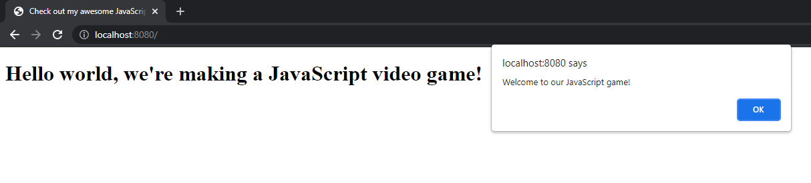

Hello World and basic setup
In this chapter, we'll set up our development environment and essential tools.
The first step in starting our project is to install Node.js. You can download Node.js from the official website by clicking here, and then install it on your computer by following the provided instructions. Node.js also comes bundled with a package manager called npm which we'll use to install our dependencies and set up the project.
Once Node.js has been installed, create a directory for your project, navigate to it using the command line and run the following command:
npm initFollow the prompts and give your project a name of your choice along with some other basic details. If the initialization was successful, you should see a file called package.json in the project's directory. This file contains the essentail information about your project.
Next, we will create the index.html file. This file will be the webpage that hosts the game we're making. Put the following code in the index.html file:
<!doctype html>
<html lang="en">
<head>
<title>Check out my awesome JavaScript game!</title>
</head>
<body>
<h1>Hello world, we're making a JavaScript video game!</h1>
<script src="bundle.js"></script>
</body>
</html>Note how we're importing the bundle.js file at the bottom of the index.html file. Let's create it now, and add the following content to it:
const greeting = "Welcome to our JavaScript game!";
alert(greeting);Finally, to serve the files we created to our users we'll need a suitable web server. A good option for our use is http-server, and we can install it easily on our project by typing the following command in our terminal:
npm install http-serverOnce http-server is installed, we're ready to run our project. We can do that by typing this command in the terminal:
npx http-serverIf the server was started successfully, we can finally see our project in action. Open your web browser, and navigate to http://localhost:8080. If you see someting similar to the screenshot below, congratulations, you've successfully set up the base on which we'll build our game!
If you examine the project directory, you will find the newly-created node_modules directory and the package-lock.json file. node_modules is where the packages installed by npm are stored, and the package-lock.json file is where detailed information about the installed packagesis stored. For the most part we won't need to ever interact with node_modules or package-lock.json directly.
In the next chapter we will set up Webpack, which allows us to bundle multiple JavaScript into one single bundled file which is suitable for distribution to our users.
Next: Bundling and distributing JavaScript code using Webpack